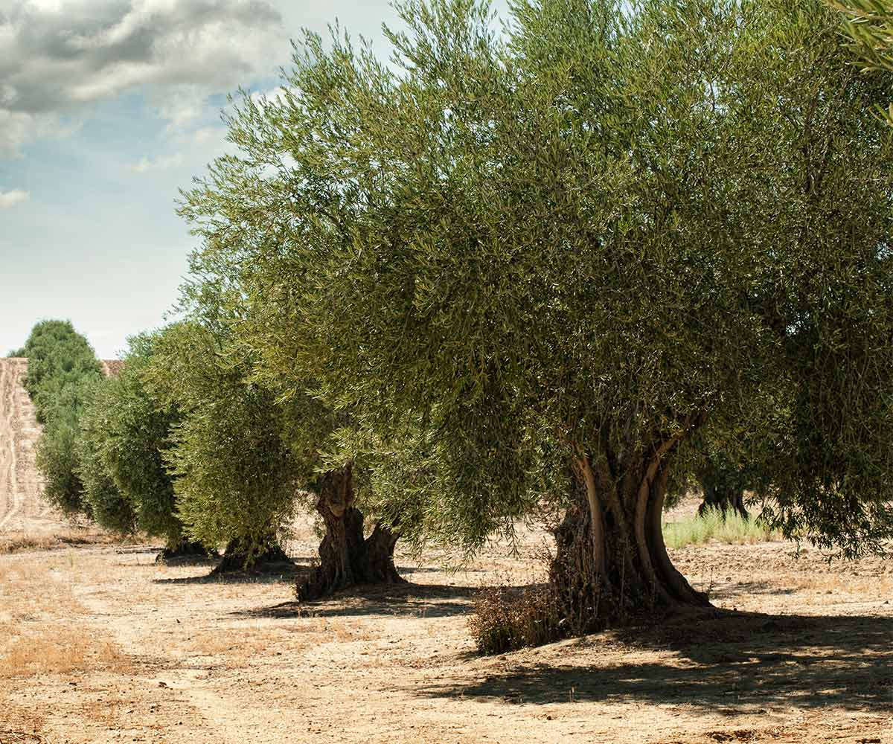

Bienvenido a la familia de Aceites Perdido!
¿Buscas el auténtico sabor del aceite de oliva virgen extra? ¡Has llegado al lugar perfecto! En
Aceites Perdido, somos una cooperativa familiar que lleva generaciones mimando nuestros olivos y
extrayendo el oro líquido con pasión y dedicación.
Aquí no encontrarás aceites industriales ni mezclas raras. Lo nuestro es aceite de oliva virgen
extra de primera cosecha, directamente del olivar a tu mesa. ¡Y se nota en cada gota!

Productos Destacados